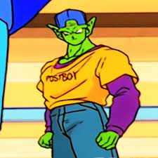

Piccolo |
 |
| Eyyy my favorite character Im gon be discussing my favorite moves,abilities, and forms from from him
Summary of character : Piccolo jr but we call him piccolo now arrived during the later parts of the original dragon ball story line during the end of the king piccolo arc and during his arc he becomes a menace to society not as much as his father but still a menace .He then later on the series recieves a redepmtion arc during the vegeta/saiyan saga were my man sacrificed himself to save gohan . He also almost always gets alot of L's for example the fight against goku , nappa 3rd form freeza , and semi perfect cell . Atleast he beat raditz during the saiyan saga :) |
F O R M S |
GIANT PICCOLO/great namekian form |
 |
| this form is when piccolo turns into a giant :) . He only used it in his fight against goku during the finale of og dragon ball and once in the movie dragon ball super : super hero but its still cool tho . As far as I know the form doesn't give any multipliers but it still gives boosts to durability and strength |
Disguise piccolo |
 |
| don't know if this counts but piccolo in a red ribbon army outfit for stealth:D |
Potential unleashed/ultimate form |
 |
| This firm is used by both gohan and piccolo the former achieving it during the buu saga and piccolo achieving it durin dbs : super hero he achieves it by asking shenron to unlock his potential the form gives a power multiplyer better than super saiyan 3 the long hair one due to gohan running super buu's pockets and SSG 3 goku could barely fight kid buu which is weaker than super buu . |
ORANGE PICCOLO |
 |
| This form is currently piccolo's strongest form , finally they giving my guy Ws :) . He used it and obtained it in dbs : super hero he recieved it from shenron as an extra gift .He ran a fade on gamma 2 as you can see in the gif and used it to fight against cell max and combined it with giant form to become |
BIG ORANGE PICCOLO |
< |
| just orange piccolo in a giant form :) , suprisingly alot of forms/techniques can stack with other techniques/forms like ssg kaioken ( non canon ) , I think ssg blue is normal ssg on god form by goku , and ssg blue with kaioken x20 . and lastly the best form |
DRIPOLLO |
|  |
| he wore the outfit during a filler episode where goku and piccolo try to learn driving using dbz's version of a car |
techniques/ablilities |
Makankosappo |
 |
| Also known as the special beam canon this move is piccolo's main and most popular move was created to kill goku and it achieved its goal during the saiyan saga by goku holding raditz so the move would hit ( goku held down raditz so that he wouldn't dodge the attack because of its slow charge time ). The move works by focusing alot of ki into a singular point and due to that it takes alot of focus and time to pull of but its really strong managing to kill raditz along with a weakened goku which was I'm pretty suredouble his power level |
Demon hand |
 |
| this move was used during piccolo's fight with goku during the og db finale and was also used during dbs : super hero I just realized he has alot of moves he has barely used unique to him it was used to run krillin's pockets like in the gif above anf to restrain cell max for gohan's makankosappo . |
Regeneration |
 |
| this counts as one of piccolo's abilities he used this alot of times like in the fight against goku again and during his 1v1 agaist imperfect cell he ripped his own arm off in both :). He didn't use it against raditz even tho he didn't have an arm but 1 arm is enough for a sepcial beam canon :) NOW FOR HIS BEST MOVE |
Clothes beam |
 |
| this move was used during gohan's training between the sayian and vegeta saga to give gohan z fighter drip and a sword and used on gohan during dbs : super hero to give gohan piccolo drip not the postboy drip tho :( |
the one move i want him to use :') |
Kaioken |
 |
| I may have some bias because this is my favorite move but still my point stands this move needs to be used more by some of the side characters the humans would benefit from it greatly due to the, not having any forms and piccolo could use it due to his regen powers . the move works by multiplying the users base stats by 2 using nirmal kaioken and can multiply it by 4 using kaioken 2x etc at the cost of straining the user's body which results in increasing blood pressure and swelling muscle mass . |